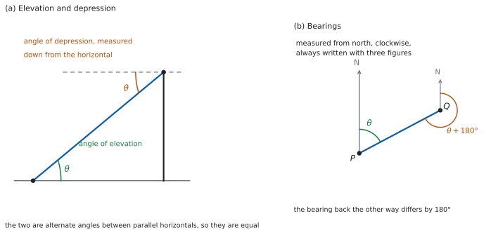

SL 3.3 — Applications of trigonometry（三角法の応用）
- 文章で書かれた場面から、ラベルを付けた図をつくれる。
- angle of elevation（仰角）と angle of depression（俯角）を、正しい場所に測れる。
- \(2\) つが等しくなる理由（錯角）が言える。
- bearing（方位角）を \(3\) 桁で書き、逆向きの方位角を求められる。
- 三角形が \(2\) つある問題で、共通の辺を橋渡しに使える。
- 直角がないときに、正弦定理・余弦定理に切りかえられる。
The idea
1. 文章から図をつくる
この項目の問題は、ほとんどが文章で与えられます。最初の一手は、いつも図をかくことです（SL 3.2）。
図には、次を書き入れます。
- 点の名前（\(A\)、\(B\)、\(T\) など）
- 水平な地面（横線）と、垂直なもの（塔・壁・木）
- 分かっている長さ
- 分かっている角（どこからどこまでか分かるように）
- 求めたいもの（\(h\)、\(x\) などの文字）
縮尺は合っていなくてかまいません。 大事なのは、どの角がどこにあるかです。
2. 仰角と俯角
どちらも、水平線から測った角です。
- angle of elevation（仰角）… 見上げるとき、水平線から上へ測った角
- angle of depression（俯角）… 見下ろすとき、水平線から下へ測った角
図 1 の (a) がその図です。
がけの上から船を見下ろす角は、がけの縦の線からではなく、水平線から測ります。
まちがえると、答えが \(90°\) から引いたものになります。図に水平の点線をかき足すと防げます。
地面の点から \(12\) m 離れたところに立つ柱を、仰角 \(60°\) で見上げているとします。柱の高さ \(h\) は
\[ \tan 60° = \frac{h}{12} \ \Rightarrow \ h = 12\tan 60° = 12 \times \sqrt{3} = 12\sqrt{3} \]
です。分かっている辺と求めたい辺を見て、\(\sin\)・\(\cos\)・\(\tan\) のどれかを選びます（SL 3.2）。
3. 俯角と仰角が等しいわけ
上の点から下の点を見下ろす俯角と、下の点から上の点を見上げる仰角は、いつも等しくなります。
\(2\) 本の水平線は平行なので、視線がその \(2\) 本を横切るときにできる角は alternate angles（錯角）です。錯角は等しい、というだけのことです。
だから、どちらか測りやすいほうで解けます。 問題文が俯角で与えても、下の点での仰角として図に書きこんでかまいません。
4. 方位角
bearing（方位角）は、北から時計回りに測った角で、整数部分を必ず \(3\) 桁にそろえて書きます。
- 真北 → \(000°\)
- 真東 → \(090°\)
- 真南 → \(180°\)
- 真西 → \(270°\)
\(60°\) ではなく \(060°\) と書きます。図 1 の (b) を見てください。
これは「有効数字 \(3\) 桁」とは別の約束です。 頭に \(0\) を足して桁をそろえるだけで、四捨五入の話ではありません。小数が出るときは、先に有効数字 \(3\) 桁に丸め、そのあとで整数部分を \(3\) 桁にそろえます。たとえば \(71.565\ldots°\) なら、\(71.6°\) と丸めてから \(071.6°\) と書きます。桁は \(4\) つになりますが、これで正しい形です。
back bearing（逆向きの方位角）は、\(180°\) ちがいます。
\[ \text{（逆向き）} = \text{（もとの方位角）} \pm 180° \tag{1}\]
\(0°\) 以上 \(360°\) 未満に収まるよう、\(+180°\) か \(-180°\) かを選びます。\(210°\) の逆は \(030°\)、\(100°\) の逆は \(280°\) です。
「北から西へ \(30°\)」のような言い方はしません。\(330°\) と書きます。
また、\(3\) 桁です。\(45°\) ではなく \(045°\) です。
5. 三角形を \(2\) つ使う問題
\(1\) つの三角形では足りないとき、共通の辺を橋渡しにします。
たとえば、同じ塔を \(2\) か所から見上げる問題では、塔の高さが両方の三角形に出てきます。だから
- 片方の三角形で、共通の辺を文字で表す。
- もう片方の三角形でも、同じ辺を表す。
- \(2\) つを等しいとおいて解く。
という流れになります。共通の辺がどれかを、図で先に見つけてください。
6. 直角がないとき
図をかいてみて直角が見つからないなら、正弦定理か余弦定理です（SL 3.2）。
- 辺とその向かいの角の組があれば → 正弦定理
- \(2\) 辺とはさむ角、または \(3\) 辺 → 余弦定理
方位角の問題では、\(2\) つの方位角の差が三角形の内角になることがよくあります。図に北の線をかき足すと、その差が見えます。
また、\(1\) 本の行程を東西方向と南北方向に分けることもあります。そのときに使うのは、いちばん近い南北の線（北か南）から測った鋭角です。その鋭角を \(\alpha\)、進んだ距離を \(d\) とすると、東西の成分は \(d\sin\alpha\)、南北の成分は \(d\cos\alpha\) になります。東か西か、北か南かは、図から読みます。（北から測った角をそのまま入れる一般の形は、SL 3.5 で扱います。）
7. 答えの書き方
- 単位を付けます。 長さなら m や km、角なら度です。
- 方位角は整数部分を \(3\) 桁にそろえて書きます（第 4 節）。有効数字 \(3\) 桁とは別なので、\(071.6°\) のように小数が付くこともあります。
exactと言われたら、\(\sqrt{\ }\) を残します。 小数にしません。- 正確な値は覚えておきます。 \(30°\)、\(45°\)、\(60°\) の値はSL 3.2 の表にあります。公式集には印刷されていません。
- 図も答案の一部です。かいた図は消さずに残してください。
TI-Nspire の Calculator 画面で、\(\sin^{-1}\) などを使って角を出せます。角の単位は doc → Settings → Document Settings の Angle で決まります。 方位角の問題は度なので、Degree にします。
方位角を出したあとに、\(3\) 桁に整えるのは自分でやることです。 電卓は 48.6 のように返します。答案には 049° のように書きます（丸め方は試験用紙の指示に従ってください）。
Paper 1 では使えません。 このページの例題と演習は、すべて手で解ける形にしてあります。

Why it works
なぜ、俯角と仰角が等しいのでしょうか。
図 1 の (a) で、下の点 \(P\) を通る水平線と、上の点 \(T\) を通る水平線を考えます。どちらも水平なので、この \(2\) 本は平行です。
視線 \(PT\) は、この \(2\) 本の平行線を横切る transversal（横断線）です。平行線を \(1\) 本の直線が横切ると、alternate angles（錯角）は等しくなります。
- \(P\) での仰角は、\(P\) の水平線と \(PT\) のなす角
- \(T\) での俯角は、\(T\) の水平線と \(TP\) のなす角
この \(2\) つがちょうど錯角の位置にあるので、等しいわけです。
なぜ、逆向きの方位角は \(180°\) ちがうのでしょうか。 \(P\) から \(Q\) を見る向きと、\(Q\) から \(P\) を見る向きは、ちょうど反対です。
\(P\) と \(Q\) での北の線は平行なので、どちらの点でも「北」は同じ向きです。\(PQ\) の向きと \(QP\) の向きはちょうど反対ですから、同じ北を基準にすると、方位角は半回転ぶん、つまり \(180°\) だけちがいます。
\(0°\) 以上 \(360°\) 未満に収めるために \(\pm\) を選びます。 \(\theta < 180°\) なら \(+180°\)、\(\theta \ge 180°\) なら \(-180°\) とすれば、必ずこの範囲に入ります（\(\theta = 0°\) なら \(180°\)、\(\theta = 180°\) なら \(000°\) です）。\(3\) 桁で書くのは、範囲とは別の、書き方の約束です。
なぜ、\(2\) つの三角形をつなげるのでしょうか。 それぞれの三角形の中だけでは、未知のものが多すぎて解けないことがあります。ところが共通の辺は、どちらの三角形から見ても同じ長さです。
だから、その辺を \(2\) とおりに表して等号でつなぐと、未知のものが \(1\) つ減った方程式になります。\(2\) 点から同じ塔を見上げる問題が、その典型です。
Worked examples
問題文は英語です。意味が理解できなかったら、問題文の下の「日本語訳」を開いてください。解説は日本語です。
例題も演習も、すべて電卓なしで解けます。 Paper 1 のつもりで解いてください。
例題 1 A vertical tower stands on level ground. From a point \(\mathrm{P}\) on the ground, \(30\) m from the foot of the tower, the angle of elevation of the top of the tower is \(60°\).
(a) Find the height of the tower, giving your answer in exact form.
(b) Find the distance from \(\mathrm{P}\) to the top of the tower.
(c) The point \(\mathrm{Q}\) lies on the straight line through \(\mathrm{P}\) and the foot of the tower, further from the tower than \(\mathrm{P}\). The angle of elevation of the top of the tower from \(\mathrm{Q}\) is \(30°\). Find the distance \(\mathrm{PQ}\).
(d) Explain why the angle of elevation decreases as the observer moves further from the tower.
日本語訳
平らな地面に、垂直な塔が立っています。地面の点 \(\mathrm{P}\) は塔の足もとから \(30\) m のところにあり、そこから見た塔の上端の仰角は \(60°\) です。
(a) 塔の高さを求めなさい。答えは正確な値で書きなさい。
(b) \(\mathrm{P}\) から塔の上端までの距離を求めなさい。
(c) 点 \(\mathrm{Q}\) は、\(\mathrm{P}\) と塔の足もとを通る直線上にあり、\(\mathrm{P}\) より塔から遠いところにあります。\(\mathrm{Q}\) から見た塔の上端の仰角は \(30°\) です。距離 \(\mathrm{PQ}\) を求めなさい。
(d) 観測者が塔から遠ざかると仰角が小さくなる理由を説明しなさい。
(a) まず図をかきます（第 1 節）。高さを \(h\) とすると、\(30\) m が隣辺、\(h\) が対辺です。
\[ \tan 60° = \frac{h}{30} \ \Rightarrow \ h = 30\tan 60° = 30\sqrt{3} \]
(b) 求めるのは斜辺です。
\[ \cos 60° = \frac{30}{d} \ \Rightarrow \ d = \frac{30}{\frac{1}{2}} = 60 \]
(c) \(\mathrm{Q}\) から塔の足もとまでの距離を \(x\) とします。高さは同じ \(30\sqrt{3}\) です（第 5 節）。
\[ \tan 30° = \frac{30\sqrt{3}}{x} \ \Rightarrow \ x = \frac{30\sqrt{3}}{\frac{\sqrt{3}}{3}} = 30\sqrt{3} \times \frac{3}{\sqrt{3}} = 90 \]
\[ \mathrm{PQ} = 90 - 30 = 60 \]
(d) Explain why なので、英語で理由を書きます。
試験ではこう書く
If the observer is at distance \(x\) from the foot and the tower has fixed height \(h\), then \(\tan\theta = \dfrac{h}{x}\). As \(x\) increases with \(h\) fixed, the fraction \(\dfrac{h}{x}\) decreases. On \(0° < \theta < 90°\) the tangent function is increasing, so a smaller value of \(\tan\theta\) comes from a smaller angle. Hence \(\theta\) decreases as the observer moves away.
（観測者が足もとから距離 \(x\) にいて、塔の高さ \(h\) が一定なら \(\tan\theta = \dfrac{h}{x}\) である。\(h\) を固定したまま \(x\) が大きくなると、分数 \(\dfrac{h}{x}\) は小さくなる。\(0° < \theta < 90°\) では正接は増加するので、\(\tan\theta\) が小さいことは角が小さいことを意味する。よって遠ざかるほど \(\theta\) は小さくなる、という意味です。）
検算（(a) について）。 辺の比で見ます。 \(60°\) の直角三角形は \(1 : \sqrt{3} : 2\) の形です。隣辺 \(30\) が「\(1\)」の位置なので、対辺は「\(\sqrt{3}\)」で \(30\sqrt{3}\) ✓ 斜辺は「\(2\)」で \(60\) になるはずです。
検算（(b) について）。 ピタゴラスの定理で出し直します。 \(\sqrt{30^{2} + (30\sqrt{3})^{2}} = \sqrt{900 + 2700} = \sqrt{3600} = 60\) ✓ 三角比を通らない道すじでも同じです。
検算（(c) について）。 辺の比で出し直します。 \(30°\) の直角三角形は \(1 : \sqrt{3} : 2\) で、\(30°\) の対辺が「\(1\)」です。対辺が \(30\sqrt{3}\) なので斜辺は「\(2\)」で \(60\sqrt{3}\)、隣辺は \(60\sqrt{3}\cos 30° = 60\sqrt{3} \times \dfrac{\sqrt{3}}{2} = 90\) ✓ わり算を通らない道すじでも \(90\) になりました。
(a) \(\tan 60° = \dfrac{h}{30}\) \[h = 30\sqrt{3} \text{ m}\]
(b) \(\cos 60° = \dfrac{30}{d}\) \[d = 60 \text{ m}\]
(c) \(\tan 30° = \dfrac{30\sqrt{3}}{x}\) gives \(x = 90\) \[\mathrm{PQ} = 60 \text{ m}\]
(d) \(\tan\theta = \dfrac{h}{x}\) with \(h\) fixed, so a larger \(x\) gives a smaller \(\tan\theta\), and hence a smaller \(\theta\).
例題 2 A vertical cliff is \(50\) m high. From the top of the cliff, the angle of depression of a boat at sea is \(45°\).
(a) Find the horizontal distance from the foot of the cliff to the boat.
(b) The boat sails directly towards the cliff until the angle of depression is \(60°\). Find the new horizontal distance, giving your answer in exact form.
(c) Find the distance the boat has sailed, giving your answer in exact form.
(d) Explain why the angle of depression of the boat from the top of the cliff is equal to the angle of elevation of the top of the cliff from the boat.
日本語訳
垂直ながけの高さが \(50\) m です。がけの上から見た、海上の船の俯角は \(45°\) です。
(a) がけの足もとから船までの水平距離を求めなさい。
(b) 船がまっすぐがけに向かって進み、俯角が \(60°\) になりました。新しい水平距離を求めなさい。答えは正確な値で書きなさい。
(c) 船が進んだ距離を求めなさい。答えは正確な値で書きなさい。
(d) がけの上から見た船の俯角と、船から見たがけの上端の仰角が等しい理由を説明しなさい。
(a) 俯角 \(45°\) は、船から見た仰角 \(45°\) と同じです（第 3 節）。水平距離を \(d\) とすると
\[ \tan 45° = \frac{50}{d} \ \Rightarrow \ d = \frac{50}{1} = 50 \]
(b) 同じやり方で、\(60°\) のときの距離を \(d_{2}\) とします。
\[ \tan 60° = \frac{50}{d_{2}} \ \Rightarrow \ d_{2} = \frac{50}{\sqrt{3}} = \frac{50\sqrt{3}}{3} \]
(c) 差が、進んだ距離です。
\[ 50 - \frac{50\sqrt{3}}{3} = \frac{150 - 50\sqrt{3}}{3} = \frac{50(3-\sqrt{3})}{3} \]
(d) Explain why なので、英語で理由を書きます。
試験ではこう書く
The horizontal line at the top of the cliff and the horizontal line at the boat are both horizontal, so they are parallel. The line of sight between the two points is a transversal cutting these parallel lines. The angle of depression at the top and the angle of elevation at the boat are alternate angles for this transversal, and alternate angles between parallel lines are equal.
（がけの上の水平線と、船のところの水平線は、どちらも水平なので平行である。\(2\) 点を結ぶ視線は、この平行線を横切る直線である。上での俯角と船での仰角は、この直線についての錯角であり、平行線の錯角は等しい、という意味です。）
検算（(a) について）。 \(45°\) の意味で見ます。 \(\tan 45° = 1\) なので、対辺と隣辺が等しくなります。高さ \(50\) と水平距離 \(50\) で、二等辺の直角三角形です ✓
検算（(b) について）。 ピタゴラスの定理で確かめます。 \(60°\) の直角三角形は \(1 : \sqrt{3} : 2\) で、高さ \(50\) が「\(\sqrt{3}\)」の位置ですから、斜辺は「\(2\)」で \(\dfrac{100\sqrt{3}}{3}\) です。\(\left(\dfrac{50\sqrt{3}}{3}\right)^{2} + 50^{2} = \dfrac{2500}{3} + 2500 = \dfrac{10000}{3} = \left(\dfrac{100\sqrt{3}}{3}\right)^{2}\) ✓ 三角比を通らない道すじでも合いました。
検算（(c) について）。 大きさで見ます。 \(\sqrt{3} \approx 1.73\) なので \(\dfrac{50\sqrt{3}}{3} \approx 28.9\) です。\(50 - 28.9 = 21.1\) で、これは \(\dfrac{50(3-1.73)}{3} \approx 21.2\) と合っています ✓ 船は近づいたので、\(d_{2} < 50\) でなければなりません。
(a) \(\tan 45° = \dfrac{50}{d}\) \[d = 50 \text{ m}\]
(b) \(\tan 60° = \dfrac{50}{d_{2}}\) \[d_{2} = \frac{50\sqrt{3}}{3} \text{ m}\]
(c) \[50 - \frac{50\sqrt{3}}{3} = \frac{50(3-\sqrt{3})}{3} \text{ m}\]
(d) The two horizontals are parallel and the line of sight is a transversal, so the two angles are alternate angles and therefore equal.
例題 3 A ship sails from port \(\mathrm{A}\) on a bearing of \(060°\) for \(8\) km to reach \(\mathrm{B}\). It then sails on a bearing of \(150°\) for \(6\) km to reach \(\mathrm{C}\).
(a) Show that \(\mathrm{A}\hat{\mathrm{B}}\mathrm{C} = 90°\).
(b) Find the distance \(\mathrm{AC}\).
(c) Find the value of \(\sin(\mathrm{B}\hat{\mathrm{A}}\mathrm{C})\).
(d) Explain why the bearing of \(\mathrm{C}\) from \(\mathrm{A}\) is \(060° + \mathrm{B}\hat{\mathrm{A}}\mathrm{C}\).
日本語訳
船が港 \(\mathrm{A}\) から方位角 \(060°\) に \(8\) km 進んで \(\mathrm{B}\) に着きます。次に方位角 \(150°\) に \(6\) km 進んで \(\mathrm{C}\) に着きます。
(a) \(\mathrm{A}\hat{\mathrm{B}}\mathrm{C} = 90°\) であることを示しなさい。
(b) 距離 \(\mathrm{AC}\) を求めなさい。
(c) \(\sin(\mathrm{B}\hat{\mathrm{A}}\mathrm{C})\) の値を求めなさい。
(d) \(\mathrm{C}\) の \(\mathrm{A}\) からの方位角が \(060° + \mathrm{B}\hat{\mathrm{A}}\mathrm{C}\) になる理由を説明しなさい。
(a) Show that なので、方位角から角を作る過程を書きます。 \(\mathrm{B}\) に北の線をかき足します（第 6 節）。
\(\mathrm{A}\) から \(\mathrm{B}\) の方位角が \(060°\) なので、\(\mathrm{B}\) から \(\mathrm{A}\) の方位角は \(060° + 180° = 240°\) です（式 1）。\(\mathrm{B}\) から \(\mathrm{C}\) の方位角は \(150°\) です。
\[ \mathrm{A}\hat{\mathrm{B}}\mathrm{C} = 240° - 150° = 90° \]
(b) 直角なので、ピタゴラスの定理です。
\[ \mathrm{AC} = \sqrt{8^{2}+6^{2}} = \sqrt{64+36} = \sqrt{100} = 10 \]
(c) \(\mathrm{B}\hat{\mathrm{A}}\mathrm{C}\) から見て、\(\mathrm{BC} = 6\) が対辺、\(\mathrm{AC} = 10\) が斜辺です。
\[ \sin(\mathrm{B}\hat{\mathrm{A}}\mathrm{C}) = \frac{6}{10} = \frac{3}{5} \]
(d) Explain why なので、英語で理由を書きます。
試験ではこう書く
Bearings at \(\mathrm{A}\) are measured clockwise from north, and the bearing of \(\mathrm{B}\) is \(060°\), so the ray \(\mathrm{AB}\) is \(60°\) clockwise from north. At \(\mathrm{B}\) the ship turns clockwise from \(060°\) to \(150°\), a turn of \(90°\), which is less than \(180°\), so \(\mathrm{C}\) lies on the clockwise side of the line \(\mathrm{AB}\). Rotating \(\mathrm{AB}\) clockwise through \(\mathrm{B}\hat{\mathrm{A}}\mathrm{C}\) therefore reaches \(\mathrm{AC}\), and \(060° + \mathrm{B}\hat{\mathrm{A}}\mathrm{C} < 360°\), so the bearing of \(\mathrm{C}\) from \(\mathrm{A}\) is \(060° + \mathrm{B}\hat{\mathrm{A}}\mathrm{C}\).
（\(\mathrm{A}\) での方位角は、\(\mathrm{A}\) の北の線から時計回りに測る。\(\mathrm{B}\) の方位角は \(060°\) なので、半直線 \(\mathrm{AB}\) は北から時計回りに \(60°\) のところにある。\(\mathrm{B}\) で船は \(060°\) から \(150°\) へ、時計回りに \(90°\) 向きを変える。\(90°\) は \(180°\) より小さいので、\(\mathrm{C}\) は直線 \(\mathrm{AB}\) の時計回り側にある。したがって \(\mathrm{AB}\) を \(\mathrm{B}\hat{\mathrm{A}}\mathrm{C}\) だけ時計回りに回すと \(\mathrm{AC}\) に着き、\(060° + \mathrm{B}\hat{\mathrm{A}}\mathrm{C} < 360°\) なので、\(\mathrm{C}\) の方位角は \(060° + \mathrm{B}\hat{\mathrm{A}}\mathrm{C}\) である、という意味です。）
検算（(a) について）。 舵を切った角で見ます。 船は \(\mathrm{B}\) で、方位角 \(060°\) から \(150°\) へ時計回りに \(90°\) 向きを変えました。進行方向が \(90°\) 変わったということは、\(2\) 本目の行程が \(1\) 本目と垂直だということです。\(\mathrm{BA}\) は \(1\) 本目の逆向きですから、\(\mathrm{BA}\) と \(\mathrm{BC}\) のなす角も \(90°\) ✓ 逆向きの方位角を通らない道すじでも同じです。
検算（(b) について）。 \(3\)-\(4\)-\(5\) の組で見ます。 \(6 : 8 : 10\) は \(3 : 4 : 5\) の \(2\) 倍です ✓ \(6^{2}+8^{2} = 100\) を計算しなくても分かります。
検算（(c) について）。 \(\cos\) でも見ます。 \(\cos(\mathrm{B}\hat{\mathrm{A}}\mathrm{C}) = \dfrac{8}{10} = \dfrac{4}{5}\) で、\(\left(\dfrac{3}{5}\right)^{2}+\left(\dfrac{4}{5}\right)^{2} = \dfrac{9+16}{25} = 1\) ✓
(a) bearing of \(\mathrm{A}\) from \(\mathrm{B}\) is \(060°+180° = 240°\) \[\mathrm{A}\hat{\mathrm{B}}\mathrm{C} = 240°-150° = 90°\]
(b) \(\mathrm{AC} = \sqrt{64+36}\) \[\mathrm{AC} = 10 \text{ km}\]
(c) \[\sin(\mathrm{B}\hat{\mathrm{A}}\mathrm{C}) = \frac{3}{5}\]
(d) \(\mathrm{AB}\) is \(60°\) clockwise from north; the \(90°\) clockwise turn at \(\mathrm{B}\) puts \(\mathrm{C}\) on the clockwise side of \(\mathrm{AB}\), so rotating a further \(\mathrm{B}\hat{\mathrm{A}}\mathrm{C}\) clockwise reaches \(\mathrm{AC}\).
例題 4 Three towns \(\mathrm{A}\), \(\mathrm{B}\) and \(\mathrm{C}\) lie on level ground. \(\mathrm{AB} = 6\) km, \(\mathrm{BC} = 10\) km and \(\mathrm{A}\hat{\mathrm{B}}\mathrm{C} = 120°\).
(a) Find \(\mathrm{AC}\).
(b) Find the area of triangle \(\mathrm{ABC}\), giving your answer in exact form.
(c) Find the value of \(\cos(\mathrm{B}\hat{\mathrm{C}}\mathrm{A})\).
(d) Explain why triangle \(\mathrm{ABC}\) has no right angle.
日本語訳
\(3\) つの町 \(\mathrm{A}\)、\(\mathrm{B}\)、\(\mathrm{C}\) が平らな地面の上にあります。\(\mathrm{AB} = 6\) km、\(\mathrm{BC} = 10\) km、\(\mathrm{A}\hat{\mathrm{B}}\mathrm{C} = 120°\) です。
(a) \(\mathrm{AC}\) を求めなさい。
(b) 三角形 \(\mathrm{ABC}\) の面積を求めなさい。答えは正確な値で書きなさい。
(c) \(\cos(\mathrm{B}\hat{\mathrm{C}}\mathrm{A})\) の値を求めなさい。
(d) 三角形 \(\mathrm{ABC}\) に直角がない理由を説明しなさい。
(a) 直角がないので、余弦定理です（第 6 節）。\(\mathrm{A}\hat{\mathrm{B}}\mathrm{C}\) は \(\mathrm{AB}\) と \(\mathrm{BC}\) のはさむ角です。
\[ \mathrm{AC}^{2} = 6^{2}+10^{2} - 2(6)(10)\cos 120° = 36+100 - 120\left(-\frac{1}{2}\right) = 136+60 = 196 \]
\[ \mathrm{AC} = 14 \]
(b) 同じ \(2\) 辺とはさむ角で出せます（SL 3.2）。
\[ \text{面積} = \frac{1}{2}(6)(10)\sin 120° = 30 \times \frac{\sqrt{3}}{2} = 15\sqrt{3} \]
(c) \(3\) 辺がそろったので、角を求める形です。\(\mathrm{B}\hat{\mathrm{C}}\mathrm{A}\) をはさむ \(2\) 辺は \(\mathrm{CB} = 10\) と \(\mathrm{CA} = 14\) で、向かいは \(\mathrm{AB} = 6\) です。
\[ \cos(\mathrm{B}\hat{\mathrm{C}}\mathrm{A}) = \frac{10^{2}+14^{2}-6^{2}}{2(10)(14)} = \frac{100+196-36}{280} = \frac{260}{280} = \frac{13}{14} \]
(d) Explain why なので、英語で理由を書きます。
試験ではこう書く
The angles of a triangle add to \(180°\). Since \(\mathrm{A}\hat{\mathrm{B}}\mathrm{C} = 120°\), the other two angles add to \(60°\), so each of them is less than \(90°\). The angle at \(\mathrm{B}\) is \(120°\), which is not \(90°\) either. Hence no angle is a right angle. Equivalently, \(\mathrm{AC} = 14\) is the longest side and so the only possible hypotenuse, and \(6^{2}+10^{2} = 136 \neq 196 = 14^{2}\).
（三角形の角の和は \(180°\) である。\(\mathrm{A}\hat{\mathrm{B}}\mathrm{C} = 120°\) なので残りの \(2\) 角の和は \(60°\) となり、どちらも \(90°\) より小さい。\(\mathrm{B}\) の角も \(120°\) で \(90°\) ではない。よって \(3\) つの角のどれも直角ではない。同じことは辺からも分かる。\(\mathrm{AC} = 14\) が最長辺なので斜辺になりうるのはこれだけだが、\(6^{2}+10^{2} = 136 \neq 196 = 14^{2}\) なので、ピタゴラスの関係は成り立たない、という意味です。）
検算（(a) について）。 鈍角のはたらきを見ます。 \(\mathrm{A}\hat{\mathrm{B}}\mathrm{C}\) が \(90°\) なら \(\mathrm{AC}^{2} = 136\) でした。\(120°\) は鈍角なので、これより長いはずです。\(196 > 136\) ✓ 符号を落として \(136-60 = 76\) としていないかも、ここで分かります。
検算（(b) について）。 底辺と高さで出し直します。 \(\mathrm{BC} = 10\) を底辺とします。\(\mathrm{A}\hat{\mathrm{B}}\mathrm{C}\) が鈍角なので、\(\mathrm{A}\) から下ろした垂線の足は線分 \(\mathrm{BC}\) の外に出ます。その直角三角形の \(\mathrm{B}\) のところの角は \(180°-120° = 60°\) ですから、高さは \(6\sin 60° = 3\sqrt{3}\) です。面積は \(\dfrac{1}{2}(10)(3\sqrt{3}) = 15\sqrt{3}\) ✓
検算（(c) について）。 辺に戻します。 \(\cos(\mathrm{B}\hat{\mathrm{C}}\mathrm{A}) = \dfrac{13}{14}\) を余弦定理に入れると \(100+196-2(10)(14)\left(\dfrac{13}{14}\right) = 296 - 260 = 36 = 6^{2}\) ✓ もとの \(\mathrm{AB}\) に戻りました。
(a) \(\mathrm{AC}^{2} = 36+100-2(6)(10)\cos 120° = 196\) \[\mathrm{AC} = 14 \text{ km}\]
(b) \(\dfrac{1}{2}(6)(10)\sin 120°\) \[15\sqrt{3} \text{ km}^{2}\]
(c) \[\cos(\mathrm{B}\hat{\mathrm{C}}\mathrm{A}) = \frac{13}{14}\]
(d) \(\hat{\mathrm{B}} = 120°\), so the other two angles add to \(60°\) and each is acute; no angle is \(90°\).
Common errors
俯角は水平線から下へ測ります（第 2 節）。図に水平の点線をかき足してください。
整数部分を \(3\) 桁にそろえます（第 4 節）。\(45°\) ではなく \(045°\)、\(60°\) ではなく \(060°\) です。
頭に \(0\) を足すだけで、有効数字を \(3\) 桁にする話ではありません。 \(071.6°\) のように、小数が付くこともあります。
\(180°\) を足すか引くかです（式 1）。\(360°\) から引くのは、別の操作です。
文章題では、図が最初の一手です（第 1 節）。かいた図は答案に残します。
同じ辺なら、同じ文字を使います（第 5 節）。そこが橋渡しになります。
長さには m や km、角には度を付けます（第 7 節）。
Exercises
各問題に、折りたたみが \(3\) つ付いています。日本語訳、解答例（答案用紙に書くべきこと。英語です）、解説（なぜそうなるか。日本語です）。
まず自分で解いて、次に解答例と見くらべてください。解説は、合わなかったときだけ開けば十分です。
1 From a point on level ground \(20\) m from the foot of a vertical tree, the angle of elevation of the top of the tree is \(45°\). Find the height of the tree.
日本語訳
垂直な木の足もとから \(20\) m 離れた地面の点から見て、木の上端の仰角が \(45°\) です。木の高さを求めなさい。
\[\tan 45° = \frac{h}{20}\]
\[h = 20 \text{ m}\]
\(\tan 45° = 1\) なので、高さと水平距離が等しくなります（第 2 節）。
検算。 形で見ます。 \(45°\) の直角三角形は、直角をはさむ \(2\) 辺が等しい二等辺三角形です ✓ だから \(h = 20\) です。
\(20\sqrt{2}\) としないでください。 それは斜辺のほうです。
2 A ladder of length \(10\) m leans against a vertical wall, making an angle of \(60°\) with the horizontal ground. Find the exact height it reaches up the wall.
日本語訳
長さ \(10\) m のはしごが垂直な壁に立てかけられ、水平な地面と \(60°\) をなしています。壁を上る高さの正確な値を求めなさい。
\[\sin 60° = \frac{h}{10}\]
\[h = 5\sqrt{3} \text{ m}\]
はしごが斜辺、高さが対辺なので \(\sin\) です（SL 3.2）。
検算。 床までの距離も出します。 \(10\cos 60° = 5\) です。\(5^{2} + (5\sqrt{3})^{2} = 25+75 = 100 = 10^{2}\) ✓ ピタゴラスの定理が成り立ちました。
\(10\tan 60°\) としないでください。 斜辺が分かっているので、\(\tan\) ではありません。
3 From the top of a building \(40\) m high, the angle of depression of a car on level ground is \(30°\). Find the exact horizontal distance from the foot of the building to the car.
日本語訳
高さ \(40\) m の建物の上から見て、平らな地面にある車の俯角が \(30°\) です。建物の足もとから車までの水平距離の正確な値を求めなさい。
\[\tan 30° = \frac{40}{d}\]
\[d = 40\sqrt{3} \text{ m}\]
俯角 \(30°\) は、車から見た仰角 \(30°\) と同じです（第 3 節）。\(d = \dfrac{40}{\tan 30°} = \dfrac{40}{\frac{\sqrt{3}}{3}} = 40\sqrt{3}\) です。
検算。 建物の上の角から出し直します。 建物の上端で、縦の線と視線のなす角は \(90°-30° = 60°\) です。この角から見ると \(40\) が隣辺、\(d\) が対辺なので \(\tan 60° = \dfrac{d}{40}\)、つまり \(d = 40\sqrt{3}\) ✓ 別の角を使っても同じ値になりました。
\(40\tan 30°\) としないでください。 \(40\) は対辺、求めるのは隣辺です。
4 The bearing of \(\mathrm{B}\) from \(\mathrm{A}\) is \(070°\). Write down the bearing of \(\mathrm{A}\) from \(\mathrm{B}\).
日本語訳
\(\mathrm{A}\) から見た \(\mathrm{B}\) の方位角が \(070°\) です。\(\mathrm{B}\) から見た \(\mathrm{A}\) の方位角を書きなさい。
\[070° + 180° = 250°\]
\(70° < 180°\) なので、\(180°\) を足します（式 1）。
検算。 範囲を見ます。 \(250°\) は \(0°\) 以上 \(360°\) 未満に入っています ✓ 引いていたら \(-110°\) で、範囲の外でした。
\(290°\) としないでください。 それは \(360°-70°\) で、別の操作です。
5 A ship sails on a bearing of \(135°\) for \(12\) km. Find the exact distance the ship ends up east of its starting point.
日本語訳
船が方位角 \(135°\) に \(12\) km 進みます。出発点から東へどれだけ移動したか、正確な値で求めなさい。
The bearing \(135°\) is \(45°\) east of due south.
\[12\sin 45° = 12 \times \frac{\sqrt{2}}{2}\]
\[6\sqrt{2} \text{ km}\]
方位角 \(135°\) は、真南（\(180°\)）より \(45°\) 手前、つまり南から東へ \(45°\) 傾いた向きです。進んだ \(12\) km を南向きと東向きに分けると、\(45°\) の直角三角形ができます（第 6 節）。東向きの成分は、この \(45°\) の対辺なので \(12\sin 45° = 6\sqrt{2}\) です。
検算。 南向きの成分も出します。 南向きは \(45°\) の隣辺で \(12\cos 45° = 6\sqrt{2}\) です。\((6\sqrt{2})^{2}+(6\sqrt{2})^{2} = 72+72 = 144 = 12^{2}\) ✓ ピタゴラスの定理が成り立ちました。
角をどこから測るか、図で確かめてください。 北から測った \(135°\) をそのまま \(\sin\) に入れる形は、SL 3.5 で扱います。ここでは南北の線からの鋭角に直してから使います。
6 In triangle \(\mathrm{ABC}\), \(\mathrm{AB} = 9\) cm, \(\mathrm{BC} = 7\) cm and \(\mathrm{A}\hat{\mathrm{B}}\mathrm{C} = 60°\). Find the exact value of \(\mathrm{AC}\).
日本語訳
三角形 \(\mathrm{ABC}\) で、\(\mathrm{AB} = 9\) cm、\(\mathrm{BC} = 7\) cm、\(\mathrm{A}\hat{\mathrm{B}}\mathrm{C} = 60°\) です。\(\mathrm{AC}\) の正確な値を求めなさい。
\[\mathrm{AC}^{2} = 81+49-2(9)(7)\cos 60° = 130-63 = 67\]
\[\mathrm{AC} = \sqrt{67} \text{ cm}\]
はさむ角が分かっているので、余弦定理です（第 6 節）。
検算。 大小で見ます。 \(60°\) は \(90°\) より小さいので、\(\mathrm{AC}\) は「直角のとき」の \(\sqrt{81+49} = \sqrt{130}\) より短いはずです。\(67 < 130\) ✓
\(\sqrt{67}\) はこれ以上簡単になりません。 \(67\) は素数です。
7 A vertical tower stands on level ground. From a point \(\mathrm{A}\) on the ground, the angle of elevation of the top \(\mathrm{T}\) of the tower is \(30°\). The point \(\mathrm{B}\) lies on the straight line through \(\mathrm{A}\) and the foot of the tower, \(20\) m nearer the tower than \(\mathrm{A}\), and the angle of elevation of \(\mathrm{T}\) from \(\mathrm{B}\) is \(60°\). Find the exact height of the tower.
日本語訳
平らな地面に垂直な塔が立っています。地面の点 \(\mathrm{A}\) から見た塔の上端 \(\mathrm{T}\) の仰角は \(30°\) です。点 \(\mathrm{B}\) は \(\mathrm{A}\) と塔の足もとを通る直線上にあり、\(\mathrm{A}\) より \(20\) m 塔に近く、\(\mathrm{B}\) から見た \(\mathrm{T}\) の仰角は \(60°\) です。塔の高さの正確な値を求めなさい。
Let \(\mathrm{F}\) be the foot of the tower and let \(\mathrm{BF} = x\).
\[h = x\tan 60° = (x+20)\tan 30°\]
\[x\sqrt{3} = \frac{(x+20)\sqrt{3}}{3} \ \Rightarrow \ 3x = x+20 \ \Rightarrow \ x = 10\]
\[h = 10\sqrt{3} \text{ m}\]
\(2\) つの三角形に共通なのは、塔の高さ \(h\) です（第 5 節）。\(h\) を \(2\) とおりに表して等号でつなぐと、\(x\) だけの方程式になります。
検算。 正弦定理で出し直します。 三角形 \(\mathrm{ABT}\) で、\(\mathrm{A}\) の角は \(30°\)、\(\mathrm{B}\) のところの角は \(180°-60° = 120°\) なので、\(\mathrm{T}\) の角は \(30°\) です。正弦定理より \(\dfrac{\mathrm{BT}}{\sin 30°} = \dfrac{\mathrm{AB}}{\sin 30°}\) なので \(\mathrm{BT} = \mathrm{AB} = 20\) です。直角三角形 \(\mathrm{BFT}\) で \(h = 20\sin 60° = 10\sqrt{3}\) ✓ 共通の辺を使わない道すじでも同じです。
\(20\tan 30°\) としないでください。 \(20\) は \(\mathrm{AB}\) であって、塔の足もとまでの距離ではありません。
8 From the top of a cliff, the angle of depression of a boat is \(30°\). Write down the angle of elevation of the top of the cliff from the boat, and explain why the two angles are equal.
日本語訳
がけの上から見た船の俯角が \(30°\) です。船から見たがけの上端の仰角を書き、\(2\) つの角が等しい理由を説明しなさい。
\[30°\]
The horizontal at the top of the cliff and the horizontal at the boat are parallel, and the line of sight cuts them, so the two angles are alternate angles and are equal.
Explain why なので、どの \(2\) 本が平行かを言ってから、錯角だと書きます（第 3 節）。
検算。 数で確かめます。 がけの高さを \(10\)、水平距離を \(10\sqrt{3}\) とします。船での仰角は \(\tan^{-1}\dfrac{10}{10\sqrt{3}} = 30°\) です。がけの足もとを \(\mathrm{F}\)、上端を \(\mathrm{A}\)、船を \(\mathrm{B}\) とすると、直角三角形 \(\mathrm{ABF}\) で \(\mathrm{F}\hat{\mathrm{A}}\mathrm{B} = 60°\) なので、\(\mathrm{A}\) で水平線から下へ測った角は \(90°-60° = 30°\) ✓ \(45°\) で確かめると、垂直な線から測るまちがいでも同じ数になってしまい、見分けがつきません。
試験ではこう書く
The horizontal line at the top of the cliff and the horizontal line at the boat are both horizontal, so they are parallel. The line of sight joining the two points is a transversal cutting these parallel lines. The angle of depression at the top lies between the line of sight and the horizontal at the top, and the angle of elevation at the boat lies between the line of sight and the horizontal at the boat. These are alternate angles, so they are equal and the angle of elevation is \(30°\).
9 A ship \(\mathrm{S}\) is \(5\) km due north of a lighthouse \(\mathrm{L}\). A boat \(\mathrm{B}\) is \(5\) km due east of \(\mathrm{L}\). Find the bearing of \(\mathrm{B}\) from \(\mathrm{S}\).
日本語訳
船 \(\mathrm{S}\) は灯台 \(\mathrm{L}\) の真北 \(5\) km にあります。ボート \(\mathrm{B}\) は \(\mathrm{L}\) の真東 \(5\) km にあります。\(\mathrm{S}\) から見た \(\mathrm{B}\) の方位角を求めなさい。
North and east are perpendicular, so triangle \(\mathrm{SLB}\) is right-angled at \(\mathrm{L}\), with \(\mathrm{SL} = \mathrm{LB} = 5\). Hence \(\mathrm{L}\hat{\mathrm{S}}\mathrm{B} = 45°\). The bearing of \(\mathrm{L}\) from \(\mathrm{S}\) is \(180°\), and \(\mathrm{B}\) is east of \(\mathrm{L}\), so the bearing of \(\mathrm{B}\) from \(\mathrm{S}\) is \(45°\) less.
\[180° - 45° = 135°\]
\(\mathrm{S}\) から見ると、\(\mathrm{L}\) は真南（\(180°\)）です。\(\mathrm{B}\) は \(\mathrm{L}\) から東へずれているので、\(\mathrm{SB}\) は \(\mathrm{SL}\) より反時計回りの側、つまり \(180°\) より小さい方位角です。
三角形 \(\mathrm{SLB}\) は \(\mathrm{L}\) が直角で \(2\) 辺が等しいので、\(\mathrm{L}\hat{\mathrm{S}}\mathrm{B} = 45°\) です。方位角は \(180° - 45° = 135°\) になります。
検算。 東と南の成分で見ます。 \(\mathrm{S}\) から \(\mathrm{B}\) へは、東へ \(5\)、南へ \(5\) 進みます。東と南がちょうど同じなので、ちょうど南東の向き、つまり \(135°\) ✓
\(045°\) としないでください。 それは北東の向きです。
10 The bearing of \(\mathrm{Q}\) from \(\mathrm{P}\) is \(050°\). A student states that the bearing of \(\mathrm{P}\) from \(\mathrm{Q}\) is \(130°\). Identify the error, and write down the correct bearing.
日本語訳
\(\mathrm{P}\) から見た \(\mathrm{Q}\) の方位角が \(050°\) です。ある生徒が、\(\mathrm{Q}\) から見た \(\mathrm{P}\) の方位角を \(130°\) としました。誤りを指摘し、正しい方位角を書きなさい。
The student has subtracted from \(180°\); the back bearing differs by \(180°\).
\[050° + 180° = 230°\]
Identify the error なので、どこが違うのかを名指ししてから、正しい答えを書きます。
\(180° - 50° = 130°\) という計算をしたようです。逆向きの方位角は \(180°\) を足す（または引く）ものです（式 1）。
検算。 向きで確かめます。 \(050°\) は北東寄りの向きなので、その逆は南西寄り、つまり \(180°\) より大きい方位角のはずです。\(230°\) ✓ \(130°\) は南東寄りで、逆向きになっていません。
試験ではこう書く
The back bearing is found by adding or subtracting \(180°\), not by subtracting from \(180°\). The student has computed \(180°-50° = 130°\), which points south-east, whereas the reverse of a north-east direction must point south-west. Since \(050° < 180°\), we add: the bearing of \(\mathrm{P}\) from \(\mathrm{Q}\) is \(050°+180° = 230°\).